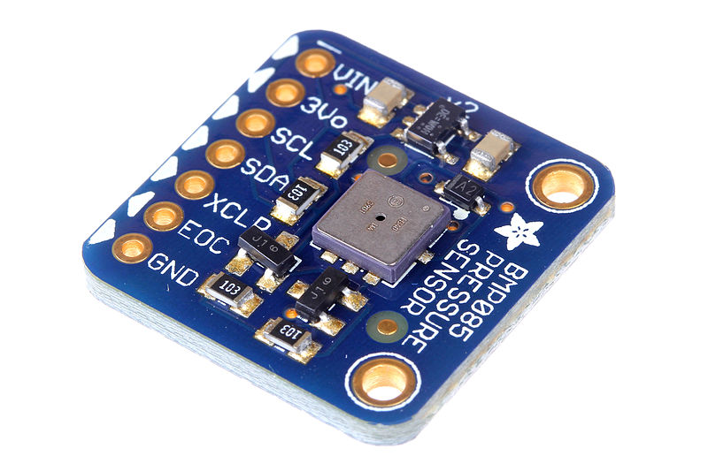
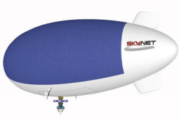

While Envirover is currently focused on environmental monitoring using stationary platforms and ocean exploration missions using USVs, our goal is to be able to be able to measure anything, anywhere. We are open to any challenge and to any partnership that will help us provide new or better solutions and push the limits of our technology.
Custom Sensors and Actuators
Support for customer-provided sensors or actuators those match the weight and power limits of the platforms.
|  |
|
Custom Platforms
Using unmanned vehicles, though technologically chanllenging, provide endless oportunities for environmental entelligence.
|  |
|